in which i yap about golden strats
this page is intended to go alongside by golden completion video. i woulda embedded it here, if it worked...[1]
before i say anything else though you definitely do not want to learn from me as i am far from the best celeste player, this page really is only so i can yap, not to be a guide you should follow; for that i would provide a whole list but also this guide by brackets is incredibly well made (see a-01 for why i didn't use these strats everywhere)
you can use ctrl+f to find internal room names (such as found in berrycamp), default cct names, and maybe the colloquial nickname if you're lucky, i'll also include timestamps so you can look at the video and provide illustrations where helpful. also no i don't so into every room, some rooms just don't have a lot going on
-
a-00 / SG-01 / golden spawn 0:05
-
i like that this alternate movement made it into the clear, idunno why i started doing it, but i like it :3
-
a-01 / SG-02 0:10
-
i never bothered to learn the speed strat here. one quote which i attribute to Hank Green is to be truly productive, put in 80% of effort but no further, not to say i didn't incorporate strats, this page wouldn't exist otherwise, but speed was not an important factor for me
-
a-03 / SG-04 0:19
-
so from the previous room, i think a hyper giving speed into double-dash crystal is the best way to go about the start of this room. with the rest, you're on your own.
-
a note regarding my controls: my LB and RB (bumper) buttons are instant hyper buttons, meaning they input down + corresponding horizontal direction (LB for left, RB for right) + jump + dash; i learned that pressing A + X + down-diag analog is very inconsistent for me[2]
-
a-04 / SG-05 00:27
-
a manage to pull off a cornerboost from previous room :D but since getting to the spring is very prone to error i downdash to play it safe
-
a-05 / SG-06 0:38
-
failed the cornerboost from previous room this time :( oh well
-
anyway, i always found that spring 2 lined up the up->spring so well i was surprised to learn there were other trains of thought
-
b-00 / SG-07 0:46
-
pufferfish boosting the second fish never caused issues
-
b-01 / SG-08 0:53
-
hold jump on first fish, rest i never struggled with; the strat where you don't make that fish explode and instead like time a right press to make dash on top of right fish viable is just so much more convoluted (you can ignore bits i make very dark if you like, because that means i go over why i don't like a strat which i feel bad doing because someone must've liked the strat enough to yap about it and at the end of the day this is for fun-- i don't wanna start arguments)
-
b-02 / SG-09 0:59
-
obligatory another cornerboost success which woulda killed me if i let it continue w/o a down dash, and hold jump and get the boost from the fish once again
-
though i'll also note, there is a save if you don't get the top coin!

grab onto the token block (duh), wait until the fish is approaching the right half of their wiggle, do a strictly vertical jump so that your next jump can be as high up as possible before jumping, then holding left into the fish, hopefully causing it to explode back to safety
-
b-04 / SG-10 1:14
-
after holding jump on the fish, on the left you see my first instance of a demo (bound to Y) which makes gaps like this much safer, rest is fairly self-explanatory
-
b-06 / SG-13 1:30
-
i have a habit of doing demos here, prolly unnecessary when i'm not in-between spinners but it certainly doesn't hurt
-
b-07 / SG-14 1:44
-
more of playing it safe with demos, though here i wanna bring up an oddity:
isn't it strange that two consecutive demos have the normal (crouched) demo animation first, but then a normal animation second? i wanna know what's up with that, feel free to get in touch
-
c-00b / PS-02 & c-01 / PS-01 2:07
-
i realized very early on in the grind that if i didn't do these rooms exactly as shown i will find a way to screw it up. i'd only do top route for an ever so slightly faster and less mind-numbing run
-
d-00 / PS-06 / key hub 2:43
-
the fumble at the start with the jelly has never happened before. the part i struggle with the most in this room is lining up the up dash through the spinners to get to the power box, though i guess i coulda labbed that out. i'm also very glad i didn't mess the rest of it up as it coulda gone a lot messier
-
d-05 / PS-07 / key skip 3:15
-
i line up roughly in the middle of the safe ground, full jump, and as Maddy's head lines up with the bubble release as i tap back getting me in the bubble, hold right, and dash within the 3f window before jellyvatoring
-
e-00y / PS-08 3:21
-
but wait! there's more! i even messed this one up at the start of the video! i tap using the d-pad to again line myself up in the middle of safe ground, hop right, demo up-right, and hold "right but not too right" to dodge every spinner before the very safe ending
-
e-00yb / PS-09 3:29
-
you can get immense swag by doing two cornerboosts in this room but neither are worth in a golden context unforch
-
e-00 / RM-02 3:49
-
somehow someway i don't remember the reverse super ever failing me in a run (it was to line up the fish up dash). only other thing worth remembering (heh) is to dash high up on the second fish because gravity exists
-
e-00b / RM-03 4:00
-
demo spinner gap, and go over the spinners with a jellyvator to make it over to spring and then updashing out. you can smuggle the jelly into next room but i'm gonna be real the idea of being this safe only to still screw up the next room is an idea so revolting to me i refuse to do it even though it's objectively the better strat
-
e-01 / RM-04 / sawmill 4:11
-
ok if there's any strat you should steal from me let it be this: a right dash into the first spring makes everything after it so much more reliable it's actually insane. the diagonals may look scary, and the inputs aren't any easier, heck this may even be some placebo but it's a functional placebo. note that also the up then up-right into the third spring are done in very quick succession. as for final block i hope you know how to optimal climb jump[3], sorry i can't help any more on that front!
-
e-02 / RM-05 4:23
-
i prefer vertical jellyvators over intended, also shoutouts to the end (walljumping off of far-right wall) whose strat i stole from Obvi, so thank her for that one not me
-
e-04 / RM-07 4:43
-
e-05 / RM-08 5:05
-
ignore my fumble, i don't really have much to say about my movement other than i got really used to it and i think that demo at the end is a cute timesave
-
e-05b / RM-09 5:17
-
i once died in this room because i dashed in-between the ground and the swap block. don't do that
-
e-05c / RM-10 5:23
-
another strat courtesy of brackets: dashing into wall (being cognizant of movement stick as to not fall, that one hurt about as much as the mistake above), wait for swap block to come back, then jump and buffer dash input so that you don't need to guess when to dash to move the fish over correctly. being too early bit me a few times too many before i implemented this
-
e-06 / RM-11 5:32
-
this room is a lot worse when not done intended, do as shown please
-
e-07 / RM-12 / fishscroller 5:42
-
i got into the habit of holding jump at the start of this room idunno why it just feels nicer to my hands, keep in mind the puffer explosion is nuanced: you do not want the boost so hold left into it, however once it has exploded you do want to hold right or you won't make it. i also wouldn't recommend demoing at the end. don't ask me why
-
e-08 / RM-13 5:56
-
this room's got a few line ups!

drop 1 is lined up using the fizzler, drop 2 is lined up using the background tiles, and for the jelly grab you want to stay on the lower portion (as shown in video is overkill, you do not need to be that low), and just before the block disappears you climb jump (collecting the crystal), dash up-right to grab the jelly as you move down, then the rest is cake. bonus points if you can get the fake heart like me with a bunnyhop (:
-
f-door / EH-01 6:17
-
the ultra never failed me, and gate skip i never attempted in a real run (only in segments starting from EH, with like a 50% success rate, 10% death rate approximately)
-
f-00 / EH-02 / wavedash.ppt 6:30
-
Okay, I'm gonna "break character" for a moment because I consider this important. Do not beat yourself up if you die in the tech tutorial rooms. These rooms are genuinely bullshit. anyway the top route is fucked up and evil and i hate it who thought a bunnyhop over was consistent???
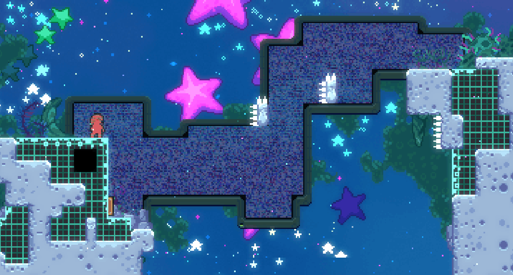
anyway what i do for ^this wall bounce is to wait until the moon block is where it's shown above or lower (using the border of the ghost Maddy screen as a visual cue) before dropping down into spring and using the lower moon block for easier line up
- a lot of the subsequent rooms (f-01 / EH-03; f-02 / EH-04 / bird ; f-03 / EH-05; f-04 / EH-6)
-
f-05 / EH-07 / conveyors 7:02
-
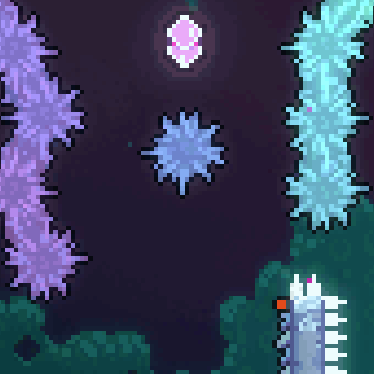
dying to ^this spinner is the most fair death of all time btw. don't demo for the third like core elevator thing (again, don't ask), jump at the top of the thing, and my preference for route is the neutrals
-
f-06 / EH-08 7:15
-
i cut it a little too close with where i decided to stay on the Kevin. get very used to the climb jump hold left then climb jump hold right. basically all the movement in this room minimizes Kevin dust bunnies until they're necessary. landing on the left is preferable for easy finish
-
f-07 / EH-09 7:33
-
honestly i just told myself to pay very close attention to my positioning relative to the moving blocks[4] and i should be fine
-
f-08 / EH-10 / haircut 7:43
-
this is my favorite strat in the entire map, credits to Parrot and Clantis: in the previous room i bunnyhop so that i collect the double-dash from the right-hand side before landing back on the ground. after climbing back up, take a good look at the controller as the double-dash returns: right dash, dash, buffer left movement using the crystal freeze frames. if done correctly you'll be in the perfect spot to make it under the spinner in the way. do note you still need to be careful to not fuck up the rest of the room, it's not free
-
g-03[5] / EH-14 / dream purgatory 8:15
-
please use demos in this room!! it makes it so much easier!! oh yea and you can also just go as far up the first dream block as possible that also helps. tiny shoutouts to the wall jumps i do at the start, they make me happy :3
-
g-02[5] / EH-15 8:25
-
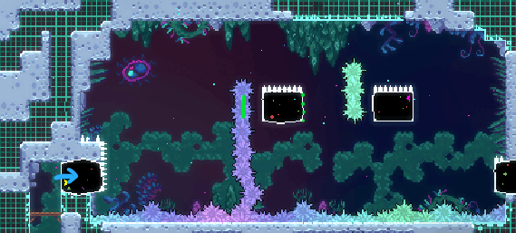
i wait until the right-hand side of ^this dream block is in the middle of the spinners to time my first dash. at the end i do silly grab spam before switching to d-pad for the final two easy-to-mess-up dashes
-
g-04 / EH-16 / comb 8:40
-
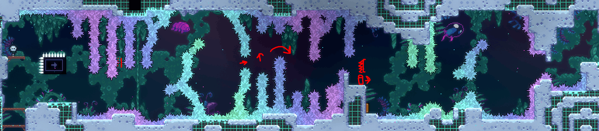
i wavedash (from a little far back, see video) when the block is around here on the right-hand side, earlier is fine, but later is not fine. remember in the middle after going through this gap that you can move up on the block to make the hop easier. for final wall bounce i find it best to compare relative to Madeline, once the spikes on the block line up with her head you hold right until you fall then you go left to hit the spring and it should be well lined-up wall bounce.
-
i
almost certainly do this suboptimally, the start third is prone to error as i kinda just wing the starting placement and i've heard the preferred strat is an extended hyper for some reason, ditto for the final third because of the right->left->spring. basically don't listen to me, listen to brackets instead
-
g-05 / EH-17 / cloud gap 8:55
-
another brackets strat i stole after more deaths than necessary: on the highest pixel of the wall (if Maddy does a bit of movement back down, you're in the right spot; this is infinitely retryable as the video demonstrates), then NOT USING ANALOG hold down-right dash on as close to the same frame as you can. if done correctly you make it past the right-hand side in quite possibly the strat with the highest actual safety to how safe it looks ratio possible
-
g-06 / EH-18 9:05
-
two minor things: 1) if you're on analog i do recommend what i do for the dropper segment which is to bind right analog stick down to downward movement for the fastfall and 2) if you are the type to want to hang out in discord vc but also want to lock in on the latter half of the run, the end of this room is not a bad spot to do it (or, if you're not yet consistent at EH, or it gives you nerves still, do it after finishing the bs tutorial rooms)
-
two minorer things: -1) that feather was like prolly frames away from a spinner. -2) the up-right into last feather is probably not necessary but i don't think it can actively kill ya either
-
h-00b / DT-01 9:49
-
wavedash mandatory (imho), demoing at the end probably not mandatory but it make me feel safe,
-
h-01 / DT-03 10:10
-
worth noting that at the start of this room i keep jump held as often as i can get away with, and the walljump i really do think it helps line up everything that follows
-
h-02 / DT-04 10:23
-
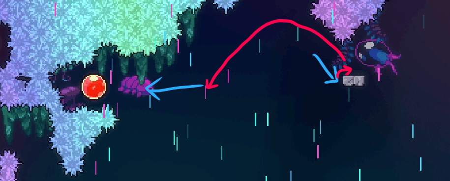
knowing ^this save exists makes the room so much less scary
-
h-03b / DT-06 / core jank 10:39
-
i found that the less time you waste here the better: immediate wavedash, up dash, be in the middle of the core block, and follow the rest of route as shown. my condolences to any core block haters
-
h-04 / DT-07 / starshaft 10:53
-
this one's an audio cue: wait for the topmost star to go to the right then time the jump..wavedash with swish..swish sound of the stars
-
h-05 / DT-08 / cheese 11:04
-
i don't remember who i stole this strat from, it's too clever to be something i labbed, soz: jumping off of the wall as shown sets up the super pretty much perfectly
-
h-06 / DT-09 11:15
-
only thing worth remembering is to hold grab (LT, very top of the input display) when you first get into the feather and don't let go until you leave the room
-
h-06b / DT-10 / balls 11:33
-
my route, generally
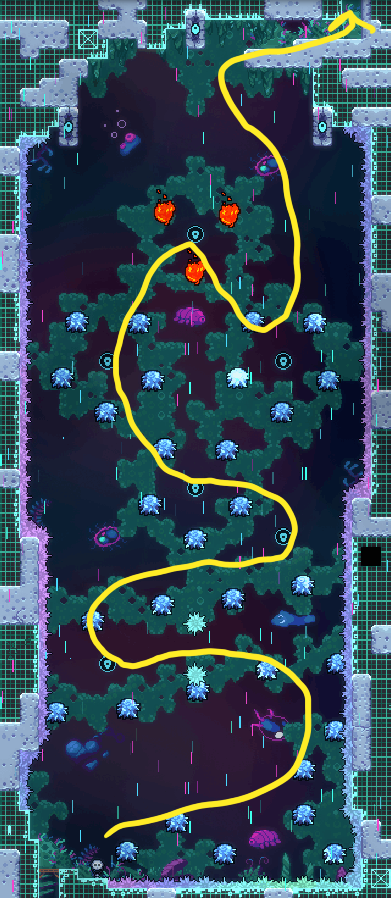
one thing i'm kinda obligated to mention there's so many routes that honestly this is one you should lab yourself, that said...
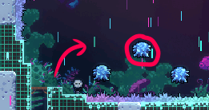
my first jump is when this ice ball is at its highest, as shown.
as a general rule of thumb, on top of demoing where it makes sense, if you're inside a ring of ice balls, do not hold jump; likewise if you're inside a ring of ice balls, holding jump can be safe. and on the topic of nerves, this next room is fucking tough, so take a swig of water like i did if you think you need it, seriously
-
h-07 / DT-11 / windsprings 12:06
-
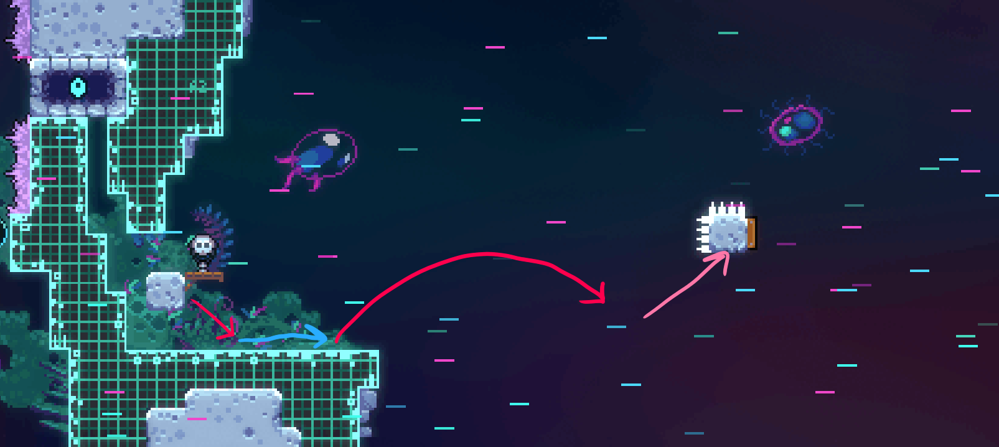
from the right-hand side of this block, hold down right (using d-pad for analog players), extended hyper (i.e. jump late), up-right demo into spring 1 (d-pad optional, but recommended), another up-right demo, DO NOT HOLD RIGHT (the wind will line you up), then up demo[6]. remember that it's optimal to climb up on the final blocks before jumping
-
h-08 / DT-12 12:28
-
for core elevators, hold jump as high up as possible, the red dots are a good visual cue. for the ice walls, start your dash as low as possible (while still being near the wall), the tokens are not low enough. also, don't go up after this room, makes the ending harder.
-
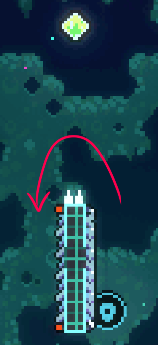
^this is apparently a possible save if you miss the dash crystal! but i've only managed to pull it off once.
-
h-09 / DT-13 12:42
-
i like to bop the right-hand side of kevin, keeping the kevin as leftmost as is reasonable on the down dash. the double-dash grab you see in the video is optional, even if you're too low you'll still be able to dash upwards at the end as shown in the video
-
h-10 / DT-14 13:01
-
ok this might be the dumbest strat i do: i cornerboost from the previous room and then kinda just.. wing it, like there's not 0 rhyme or reason to my movement, but it's hard to articulate so the best i can really do is just tell ya to watch the video it's just something i got very very used to (or just lab it yourself)
-
i-00 / ST-01 13:32
-
you can technically save time here but it's riskier, and if you're like terrified of the spiky pink cassette block, you have a dash that can save you
-
i-01 / ST-03 14:04
-
first jump is timed for when the first blue turns on. also worth being cognizant of Madeline's position so you don't mistime dashes into springs
-
i-02 / ST-04 / horseshoe 14:15
-
extended hyper audio cue, sort of: the cassette blocks go "dun, dun-dun (pause)" and i dash on the pause. the rhythm of the blocks is fortunately easy for me to keep up with. after the first blue and grabbing the double-dash crystal, your dashes should be as high up as possible (close to the lightning, without dashing into it). this ensures you can grab the bottom of the pink, though make sure you climb jump quickly. also make sure you time the exit of the pink box well, you don't wanna die to those spikes in there
-
i-03 / ST-05 14:31
-
immediate super on entry gets you in between the blues, and the pattern i follow is up-right -> grab crystal -> fall a bit -> dash up -> hold right grabbing the wall -> jump -> repeat. at the end (on next blues), you can climb up and over as the yellow can't really kill you
-
i-04 / ST-06 14:45
-
i time my bubble entry on the blue cassette beat, rest is probably intended. the safer exit strat i think is to rise up a bit with the token block, the upward boost isn't that powerful and the rightmost bubble returns pretty fast. i cannot recommend grabbing and ungrabbing on the block it's just much jankier
-
i-05 / ST-07 / underhang 14:58
-
other than "do it intended", i made sure that i got a sense of the rhythm at the start instead of just going for it, had to play it safe
-
j-00 / RC-01 15:18
-
i time both my extended hypers in the pauses in the cassette blocks i talk about in i-02, also shoutouts to my post-box movement which gives a sense of "let's fucking do this" without needing to say those words out loud, interrupting the flow
-
there's apparently a strat to make it to the dash crystal on blues instead of on pinks like me which is probably safer, feel free to experiment
-
j-00b / RC-02 15:32
-
instant hyper button (see a-03) sets up the first Baddy orb entry
-
j-02 / RC-04 16:07
-
i was very aware that the jelly grab post-spring is very fuck-upable, also ensure the jelly grab after is not too low nor too far to the left which would cause Maddy to back up into the spinners upon release
-
j-04 / RC-06 16:44
-
please do this very safe strat if you can, all it requires is a wavedash: wavedash to get under jelly, dash up, bring jelly back to ground, and use the bit of wall above you and wall jump, then hold up-right grab and jump[7]. from my testing it does not matter where you wall jump from, even at the lowest you should still make it to the bird which is possible to miss otherwise
-
j-06 / RC-08 17:05
-
after the second Baddy orb boost i do a very quick and short wavedash on the block, the next bit (courtesy of Valent) was to wait on this block until i'm roughly aligned with Baddy for the electricity cycle (it's not as scary as it looks),
-
j-07 / RC-09 / chokeaquarium 17:25
-
be careful not to dash into the spikes near the springs, that one hurt. i prefer over most fish with the feather as even if you bop or explode a fish it's technically saveable
-
j-08 / RC-10 / chokedreamjumps 17:39
-
know how to dream jump and don't fuck up dash sequence post-final-Baddy: right -> wait -> right -> up -> up -> UP-RIGHT -> right (bang) -> right (bang)
-
j-09 / RC-11 / chokejelly 17:54
-
here i vertical jellyvator before the electric squares so i'm higher, after the bottom springs i pay close attention to the electric cycle: down -> up, go -> up -> down -> up, go -> up -> down -> up, go ("go" = up-right jellyvator)
-
j-10 / RC-12 / chokeswapblocks 18:18
-
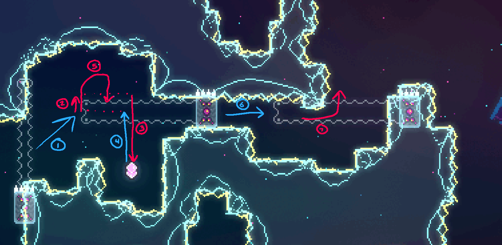
^this has to be intended path, also post-second-bird i prefer holding right and grab to make it onto the second block, continuing to hold grab after this point for the following jumps can save you so i recommend it
-
j-11 / RC-13 / chokesprings 18:48
-
the down-right at the start is swag i got used to, don't copy.
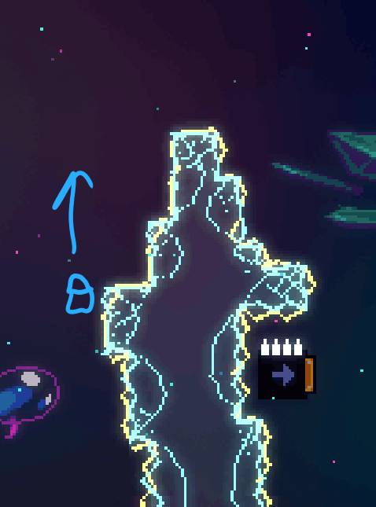
^this dash is lined up using the electricity, don't miss the up-left once there's only one move block left (post-second-Baddy), then left -> left -> left -> drop -> up (and over) -> up -> right (bang) -> don't miss the final spring -> up -> left (bang) -> right
-
j-12 / RC-14 / chokeblocks 19:11
-
just don't underestimate the difficulty of this room with nerves, i died here twice with the golden.
-
j-13 / RC-15 / chokefeather 19:31
-
i like the first jump very late as shown, even coyote frames are fine though obviously scary. i've heard the demos in this room are placebo but that really doesn't sound right to me (like, look at the video, it had to have saved me a couple of times)
-
j-14 / RC-16 / chokefish 19:46
-
be very careful with the "slalom" drop in-between the visible fish ranges. for the second pufferfish, you want to hold left to not get the boost, but once it explodes, switch to right and just time the dash well after that. definitely also worth having the dodge of the jutty-out-bit-of-electricity in your muscle memory. don't miss the double-dash soon after, yes that is possible to miss. don't fuck up the "puzzle" at the end either
-
j-14b / RC-17 / chokebounce 20:03
-
going into the corner for the extended hyper probably isn't necessary normalization but i found it helpful especially if i timed my jump from hyper hella late. for jelly release, you wanna be a little to the right (not immediately above) the double-dash so that once you release and move back slightly you are aligned with the double-dash. take the moon blocks safe, that would be a sad death
-
holy shit i almost mistimed the wallbounce thank you corner correction holy fuck
-
j-15 / RC-18 / chokevin 20:16
-
get very used to the sequence: dash left -> hop on Kevin -> jump -> dash up-right. if you fail it, the Kevin does not come back. you can hold down-right for the rest of the room for the wavedashes. and as for nerve management, what i did was undeafen myself in the discord vc, Deaf (the other person in vc) never ended up speaking in fwfw but he was there if i wanted to say some dumb shit that he wanted to respond to. don't forget that whatever happens in the farewell checkpoint, be proud of yourself!
-
j-16 / FW-01 / fwfw 20:38
-
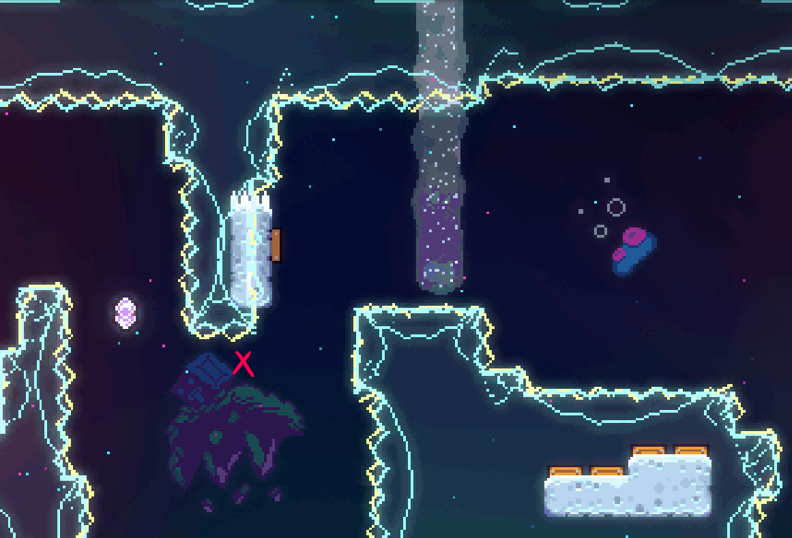
^here ya wanna release the jelly roughly where it's marked with the X, you don't want to throw it so far forward that the jelly doesn't touch any of the shown springs at all.
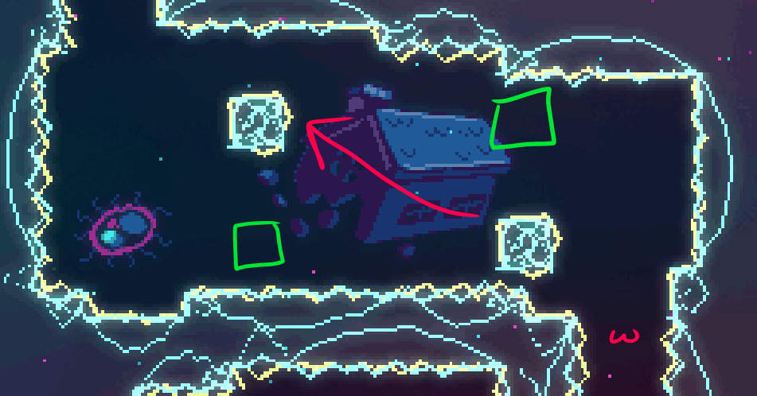
waiting around ^here (marked with ω) so the electricity is as shown in green is so much safer than the alternative.
notice my input display just before the onslaught of fish: intended wants me to hold for a long time, which is tough on the finger, so what i do here is hold both LT and RT (both are bound to grab), then release LT to give that finger some rest, then go back to LT and RT, then back to the normal LT before moving through the fish. that little adjustment is all i need for the finger to survive the rest of the room.
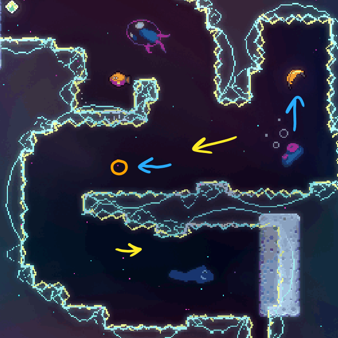
^here, take note of a couple things: 1) line this fish up properly, fortunately the wind makes this easier than normal, 2) you notice i do not use a strictly horizontal feather angle to make this a bit tighter, because you don't want to be so far away from the falling block that you literally do not make it there; being high up on the lower portion as shown is preferable for the same reason
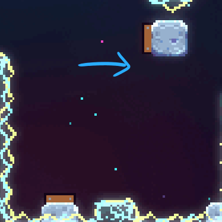
don't demo ^this, that can backfire.
for final section, the pufferfish can give you so much speed that holding right can just send you too far forward, look at input display for when i back off. and at the end, because it's my favorite line in the game, "Say goodbye to her for me."[8]
-
end-golden[9] / FW-02 / golden room 23:16
-
i prefer top route for grabbing jelly. i ensure for both ice walls i'm not too close for bouncing the jelly off of (if you lose the jelly, it can go awry fast), i make my way up as shown, and for up dash through spinners i was thinking that if i was not lined up properly not to hold grab, but i nailed the line-up first try. smooth sailing from there, enjoy the moment of victory as there's really no other feeling like it
misc yapping
-
mods i used during run
-
vc stuffs
- i deliberately did not record discord vc bc people don't like not being told they're being recorded and it's just kinda a hassle to inform people so that's why i just say shit randomly
- the topic of discussion at the beginning was Balatro
- "[joker] is gonna come back" "no it won't, don't tempt fate like that"
- "oh that [round] wins" "is it a good or bad thing that that won?" "bad, because [probably less scaling bc of less hands played]" "i see, yea, say no more"
- i was thinking of talking further (it is interesting that the above situations exist in Balatro), but it was a somewhat far and it could wait
- "good shit Blan" "not yet, not yet, there's a golden room"
- didn't hear Deaf's reaction, if any (dubious, he's not a Celeste player), due to the pop-off
- the reason why the vc audio was so quiet is bc i didn't plan for it like at all; any additional thought would've made me set the audio up proper
-
thoughts on goldening in general
- as i said in the description of my 7bg video, i hadn't expected to enjoy collecting goldens as much as i do when i first started playing, it was only after 8ag when the "golden bug" as i call it really bit me, whatever part of my brain convinced myself i wasn't good enough or interested was completely proven wrong the moment i got that
- the absolute best part is labbing, it really scratches the problem solving itch[8] for me to take down a room that was previously inconsistent by just playing around with potentially unorthodox looking movement[13]. it's really all it takes to defeat the hardest this game has to offer imo
- despite that, it's no surprise that i say goldening ain't for everyone; it can be really demoralizing getting kicked back to the start with every attempt, it's the kind of frustration only some can handle
-
what's next?[14]
- i really wanna stream celeste on twitch! come say hi (:
- so i do have a soft spot for the smaller maps that spring collab and strawberry jam provide, but at the same time i don't want to do what everyone else has done if i can help it
- most likely i'll be doing chill silvers and rainbow berries in as many lobbies until i get bored
- fonda sweep would be peak
- i also made a (not public) wheel filled with tier 1 silvers. at the time of writing, i've done and not recorded 69 of them, i'll likely redo them for goldberries
- but also also i am not forcing myself to do specific maps if i don't enjoy them, nor will i force myself only into deathless, i can totally see myself just having a chill time with casual stuff
- not even strictly gameplay related but i wanna be a little more out there and celeste spaces are fairly chill so if you see me just know that max% was definitely the catalyst
-
thank yous, i was gonna yap even more but i don't need to explain why these players[15] are goated lmao
- Parrot
- issy
- RedBeanBun
- Rick
- Shilsey
- Clantis
- Cr33ps
- Ecl1psed
- yugene
- carrie
- fonda
- touhoe
- Everyone at EXOK
- (probs more, sorry!)
- anyone who cheered me on Discord or Twitch
- You, thanks for reading ♥
-
these people got this golden bc of me (message me on discord if that's you!)
[1] ^ think you can fix this, or any other error on this page? please send a pr!
[2] ^ especially during dream hypers (if you don't know what that is, dw, it's not required in this chapter)
[3] ^ there's an ultra difficult room which requires optimal climb jumps, i would recommend it if it didn't take me 55 hours to clear (the entire map not just the climb jump section). if there's a more beginner-friendly map where optimal climb jumps are required that you know of, do get in touch
[4] ^ someone please enlighten me with what these blocks 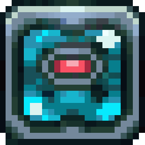 should be called
[5] ^ ^ if it looks like this is in the wrong order, they're not, they're just named wrong...
[6] ^ the reason triple up-right demo doesn't work is, according to a twitch chatter (not verbatim), "because of subpixel bullshit"
[7] ^ this jump press may not be necessary as i've never tried it without, lmk if this is overkill though it definitely doesn't hurt
[8] ^ ^ content warning: death in summer 2019, i lost someone near and dear to me in a way no other individual has replicated since. she single-handedly ignited my passion for computer science and more specifically problem solving, as she was deeply passionate about it. i can't deny that even now the reality that i can't speak with her anymore stings, but i hope that if she can see what i've accomplished, she'd be proud of me ♥
[9] ^ if you, like me, wanna practice this room at the end of low deaths: use Everest, turn debug mode on, press F6 (menu) then F2 (center cam on current room), use camera (middle mouse) to move mostly right and a little down (see berrycamp if you struggle, they're correctly positioned relative to each other there; you can press F2 again if you're lost), and right click in the golden room to enter it
[10] ^ for continuing a low death from a golden attempt, you will need to die (i recommend using retry) in the first room once you debug back there without the golden, as it won't count your golden death
[11] ^ as i talk about briefly in the video, this file has a few discrepancies due to spawning a golden for testing not realizing it would still be tracked by cct. i've plopped it on my github in the hopes that some kind individual can iron that out if they so wish. if that gets done i may add additional information to this page but no promises
[12] ^ i should note for fw specifically your pb as shown by this mod is not reliable, the journal (what death tracker displays) only counts lowest death count from the start checkpoint, not singular. my pb at the start of the video was actually 1, not 2. so unless you wanna play from start every time you'll need to keep track of low death pb yourself
[13] ^ recommended viewing: Spring Collab Expert Lobby 100% Deathless, RedBeanBun's actually the goat when it comes to this kind of stuff
[14] ^ at the time this page first went live (february 6th, 2026), i will not be updating the text regularly though i may put links if i've done anything i talk about here
[15] ^ goes without saying but subject to change